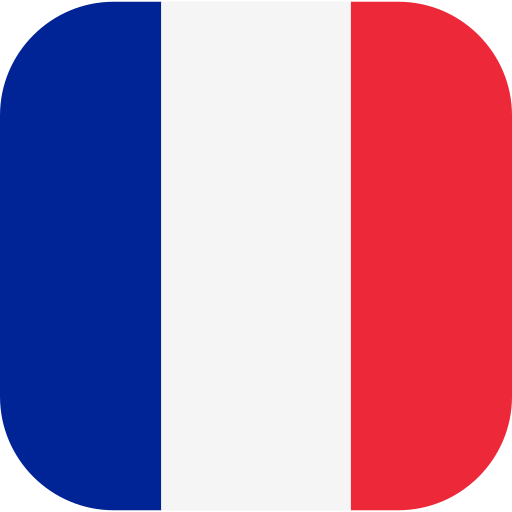
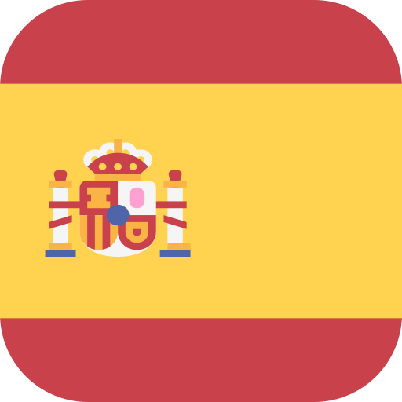

Curriculum vitæ
Un parcours tourné vers le produit
Développeuse informatique freelance, je conçois des sites web, applications métier et solutions numériques sur mesure. Mon expertise associe développement front-end et back-end, UX/UI et communication visuelle afin de créer des produits performants, intuitifs et adaptés aux besoins des utilisateurs.
Parcours
Formation & situation actuelle
De la licence au master en informatique, jusqu'au freelance.
Actuellement
Freelance
Mobilité : Auvergne-Rhône-Alpes & télétravail
J'accompagne mes clients dans la création de sites web, applications métier et solutions numériques sur mesure, de la conception UX/UI jusqu'au développement et à la mise en production.
2024
Master 2 Informatique
Université Lumière Lyon 2
Réalisation de projets complexes en développement full stack, automatisation et conception de solutions numériques.
2023
Master 1 Informatique
Université Lumière Lyon 2
Spécialisation en ingénierie logicielle, architecture applicative et méthodologies de développement.
2022
Licence 3 Informatique
Université Lumière Lyon 2
Approfondissement du développement web, de la programmation orientée objet et de la conception d'applications.
2020
DUT Informatique
Université Claude Bernard Lyon 1
Acquisition des fondamentaux du développement logiciel, des bases de données, du réseau et de la gestion de projet.
Expériences
Expériences professionnelles
Stages, missions et premiers pas dans le monde du travail.
01/05/2026 — Aujourd'hui
Développeuse fullstack
Freelance
Missions freelance.
12/01/2026 — 29/04/2026
Développeuse fullstack
Chemlys
- Refonte du site Web
- Suite du développement d'une API communiquant avec un spectromètre de masse et une vanne de type VALCO (Django, JavaScript, Bootstrap) : envoi des commandes vers le spectromètre de masse et pilotage de la vanne (automatisation)
01/04/2025 — 29/08/2025
Stage développeuse fullstack
Chemlys
Développement d'une API communiquant avec un spectromètre de masse et une vanne de type VALCO (Django, JavaScript, Bootstrap) : envoi des commandes vers le spectromètre de masse et pilotage de la vanne (automatisation).
15/04/2024 — 02/08/2024
Stage développeuse
Orange
Développement du portail de supervision du réseau mobile.
- Aide à la migration de l'infrastructure vers une solution Cloud (Symfony)
- Interfaçage avec GitLab
- Développement de modules PHP / SQL / jQuery / JSON sur le portail
2022 — 2023
Missions inventaire
FAIRSON
Réalisation de missions d'inventaire auprès d'entreprises partenaires.
11/04/2023 — 02/06/2023
Stage webdesign
My'Po SARL
Création de moyens de communication (encarts publicitaires, reels, vidéos), de maquettes, et participation au développement d'une application mobile Android.
03/05/2022 — 24/06/2022
Stage application web
BRYSON SAS
Création d'une application web permettant aux utilisateurs de gérer leurs dettes et créances.
21/10/2019 — 25/10/2019
Chantiers Jeunes
Ville de Vénissieux
Régie de quartier · questionnaire · présentation PowerPoint.
18/02/2019 — 22/02/2019
Stage vidéo
Association Tillandsia
Initiation à la pratique vidéo · prise de photos et vidéos.
01/07/2018 — 31/08/2018
CJS Véni'Coop · Coopérative de Jeunesse de Services
Ville de Vénissieux
Entreprise éphémère créée par des jeunes coopérants (prestations de service). Partenaires clients : Ville de Vénissieux, LMH (Lyon Métropole Habitat), GLH (Grand Lyon Habitat), Alliade, B&B… Missions : démarcher les clients, travaux divers (jardinage, création/distribution de flyers…), gestion des réseaux sociaux.
Compétences
Ma boîte à outils
Frameworks
Programmation orientée objet
Développement mobile
Bases de données
Systèmes d'exploitation
Outils UI/UX
Outils de développement
Logiciels
Gestion de projet
Modélisation
Réseau
Bonus : marketing
Langues

Français Anglais
EspagnolCentres d'intérêt
Automobile
Voyage
Vidéo
Cinéma
IA
Astronomie
Un projet en tête ?
Construisons quelque chose de solide ensemble.
Site vitrine, application métier ou refonte : je vous accompagne de la conception à la mise en production, à distance ou sur site.